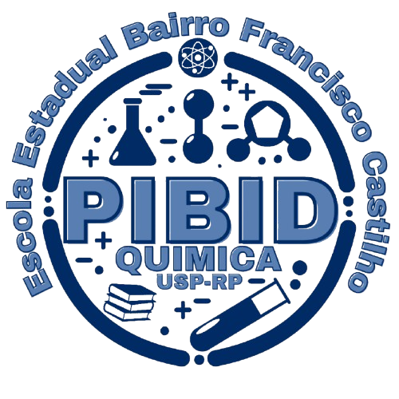

Na Cozinha
O prato pronto sempre rende menos do que a soma dos ingredientes brutos, pois parte da massa gruda nas panelas, a água evapora e aparas são descartadas.

Registre-se como pesquisador(a) de campo antes de iniciar a expedição.
Adicione ao menos um(a) integrante para liberar a expedição.
Bem-vindos à bancada! Vocês já ouviram que "nada se perde, tudo se transforma" — mas na prática, nem tudo que colocamos numa reação vira exatamente o produto que queremos. Essa diferença é o que chamamos de rendimento, e é ela que vamos investigar hoje.
Compreender o rendimento vai muito além de passar em uma prova de Química: trata-se de entender como a matéria e a energia são transformadas e aproveitadas na natureza, na tecnologia e no nosso dia a dia. O rendimento mede justamente essa eficiência.
O prato pronto sempre rende menos do que a soma dos ingredientes brutos, pois parte da massa gruda nas panelas, a água evapora e aparas são descartadas.
O veículo não aproveita todo o combustível apenas para andar: a queima da gasolina se dissipa em calor, atrito entre peças e gases expelidos.
Nem todo alimento ingerido vira energia útil: parte dos nutrientes não é absorvida pelo intestino e outra parcela vira calor corporal.
Fábricas de remédios e plásticos obtêm menos produto final do que a matéria-prima inserida: material fica retido em filtros e reações paralelas geram resíduos.
Antes de sujar as mãos com o Material Dourado, precisamos reconhecer o terreno. Entre as 10 fichas abaixo, existem fatores reais que reduzem o rendimento de uma reação — e também pegadinhas bem elaboradas. Leiam com rigor científico e selecionem as opções que vocês consideram verdadeiras.
Chegou a hora de ir para a bancada de verdade. Ouçam as regras com atenção antes de começar a montar a reação.
Dandara, Moara, Alex e Samuel: Parabéns, pesquisadores! Vocês completaram todos os registros e análises experimentais sobre o rendimento de reações. Enquanto o professor ou bolsista vem validar o trabalho de vocês, conheçam um pouco mais sobre nossa equipe e as referências científicas reais que nos inspiram:
Chame o professor ou o bolsista responsável para validar e arquivar o relatório.
Relatório arquivado com sucesso.